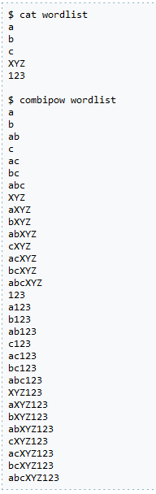

Utilitaires utiles pour
le craquage de mots
de passe avancés
Decouvre John
Plongée dans les outils de la
même équipe que John The Ripper
La suite de John The Ripper
Liste des utilitaires
Au-delà de John The Ripper lui-même, il existe d'autres utilitaires utiles de la même équipe, maintenus dans des dépôts distincts.
JohnTheRipper-utilitaire est un ensemble de petits utilitaires utiles pour le craquage de mots de passe avancés.
Ils sont tous regroupés dans plusieurs binaires autonomes.
Tous ces utilitaires sont conçus pour exécuter une seule fonction spécifique.
Comme ils fonctionnent tous avec STDIN et STDOUT, vous pouvez les regrouper en chaînes.
Chacun d'entre eux est décrit en détail dans les sections suivantes.
cap2hccapx
Outil utilisé pour générer des fichiers .hccapx à partir de fichiers de capture réseau (.cap ou .pcap) afin de casser les authentifications WPA/WPA2. Les fichiers .hccapx sont utilisés comme entrée par le type de hachage -m 2500 = WPA/WPA2.
Les options supplémentaires vous permettent de spécifier un nom de réseau (ESSID) pour filtrer les réseaux indésirables et de donner à cap2hccapx un indice sur le nom d'un réseau (ESSID) et l'adresse MAC du point d'accès (BSSID) si aucune balise n'a été capturée.
Syntaxe :
$ ./cap2hccapx.bin
usage: ./cap2hccapx.bin input.pcap output.hccapx [filter by essid] [additional network essid:bssid]
cleanup-rules
Supprime de STDIN les règles qui ne sont pas compatibles avec une plate-forme donnée.
Syntaxe:
usage: ./cleanup-rules.bin mode
où le mode est 1 = CPU, 2 = GPU.
Combinateur
Syntax:
$ ./combinator.bin
usage: ./combinator.bin file1 file2
Ce programme est une implémentation autonome de l'attaque des combinateurs.
Chaque mot du fichier 2 est ajouté à chaque mot du fichier 1, puis imprimé sur STDOUT.
Étant donné que le programme doit rembobiner les fichiers plusieurs fois, il ne peut pas fonctionner avec STDIN et nécessite des fichiers réels.
Une autre option consisterait à stocker tout le contenu des deux fichiers en mémoire. Toutefois, dans le cadre du cassage de hachage, nous
travaillons généralement avec des fichiers volumineux, ce qui implique que la taille des fichiers que nous utilisons a de l'importance.
combinator3
Comme combinator, mais accepte trois fichiers en entrée et produit la combinaison des trois listes en sortie.
combinatorX
Un outil de combinatoire étendu qui peut combiner deux, trois, quatre éléments ou plus, avec des séparateurs personnalisés entre chaque élément
, et avec un support de session/restauration et d'autres drapeaux utiles.
Notez qu'au-delà de deux listes de mots sources, combinatorX ne peut pas utiliser le même fichier direct sur le disque pour plusieurs listes
. Ceci est dû à la façon dont les fichiers sont lus à partir du disque à un bas niveau. Une solution consiste à copier la liste dans un fichier séparé.
combipow
Produit toutes les "combinaisons uniques" à partir d'une courte liste d'entrées.
cpu_rules
ct3_to_ntlm
Syntaxe:
usage: ./ct3_to_ntlm.bin 8-byte-ct3-in-hex 8-byte-salt-in-hex [24-byte-ESS-in-hex]
Il existe deux versions différentes de NetNTLMv1 - l'une avec ESS, l'autre sans.
Si vous n'avez pas de SSE :
NETNTLM_bs_fmt_plug.c: {"$NETNTLM$1122334455667788$B2B2220790F40C88BCFF347C652F67A7C4A70D3BEBD70233", "cory21"},
Vous pouvez l'utiliser comme suit :
./ct3_to_ntlm.bin C4A70D3BEBD70233 1122334455667788
51ad
Si vous avez ESS :
./ct3_to_ntlm.bin 7D01513435B36DCA 1122334455667788
1FA1B9C4ED8E570200000000000000000000000000000000
34d5
cutb
Ce programme est conçu pour découper une liste de mots (lue depuis STDIN) afin de l'utiliser dans une attaque Combinator.
Supposons que vous remarquiez que les mots de passe d'un fichier particulier ont tendance à avoir une longueur de remplissage
commune au début ou à la fin du texte en clair, ce programme découpera la longueur du préfixe ou du suffixe spécifique des mots
existants dans une liste et la transmettra à STDOUT.
Syntaxe:
$ ./cutb.bin
usage: ./cutb.bin offset [length] infile > outfile
Exemple de fichier de liste de mots :
$ cat wordlist
apple1234
theman
fastcars
Exemple de décalage positif et de longueur fixe (4 premiers caractères)
$ ./cutb.bin 0 4 wordlist
appl
them
fast
Exemple : décalage positif, pas de longueur (renvoie les caractères restants de la chaîne) :
$ ./cutb.bin 4 wordlist
e1234
an
cars
Exemple de décalage négatif (4 derniers caractères de la chaîne) :
$ ./cutb.bin -4 wordlist
1234
esman
cars
Exemple : décalage négatif, longueur fixe :
$ ./cutb.bin -5 3 wordlist
e12
hem
tca
deskey_to_ntlm
Syntaxe:
usage: ./deskey_to_ntlm.pl 8-byte-key-in-hex
En conclusion, cela fournit un ensemble d'utilitaires spécialisés pour le craquage de mots de passe, offrant une flexibilité
grâce à une conception modulaire et à la possibilité d'enchaîner les opérations.